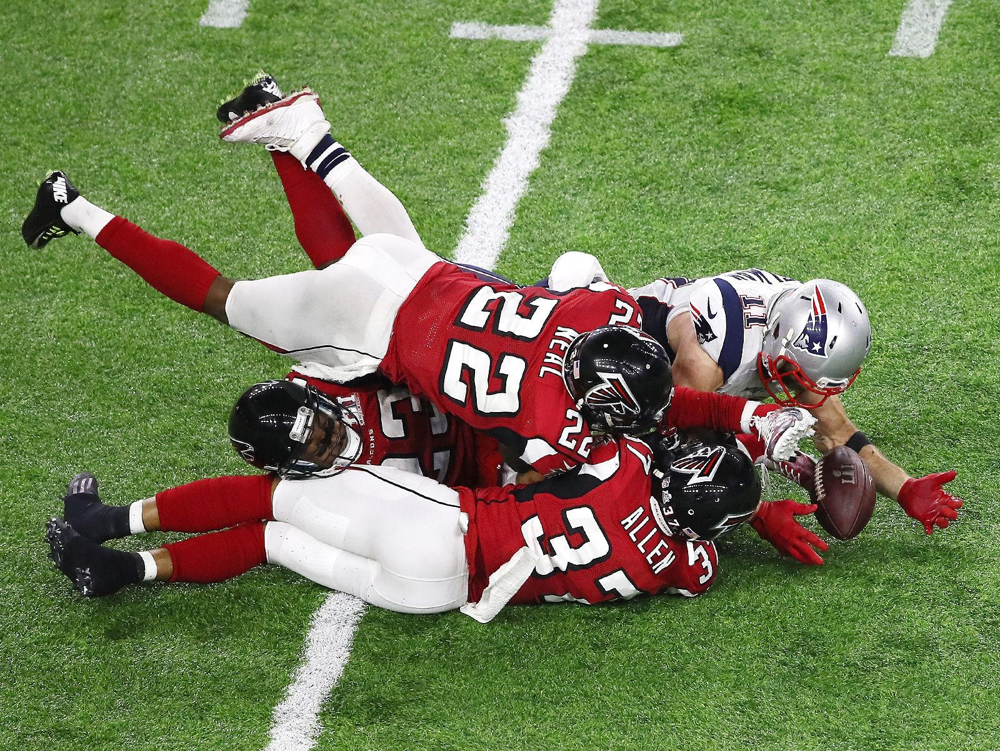
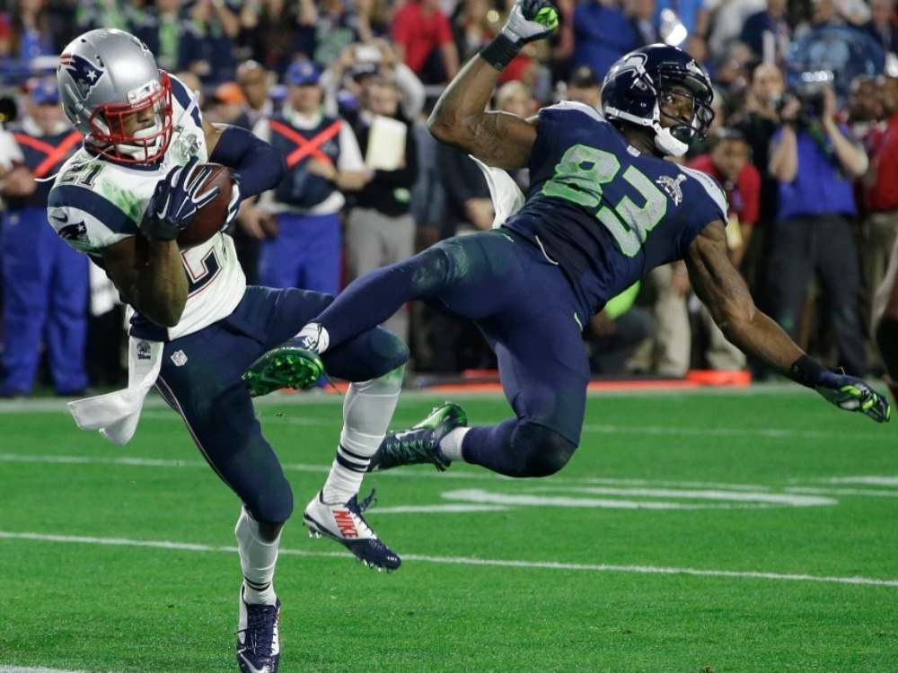

Super Bowls legendarios
Super Bowl LI
Los Falcons dominaron la primera mitad y llegaron a tener una ventaja de 28-3 a mediados del tercer cuarto. New England anotó 25 puntos consecutivos sin respuesta para empatar el juego 28-28 en los segundos finales del tiempo regular.
Fue el primer Super Bowl en la historia que se definió en tiempo extra. Los Patriots ganaron el volado, recibieron el balón y recorrieron el campo para anotar el touchdown de la victoria mediante una carrera de 2 yardas de James White.

Super Bowl XLIX
Intercepción final en la yarda 1 que decidió el campeonato.
Es recordado como uno de los finales más dramáticos en la historia de la NFL.
Con menos de un minuto restante, Seattle avanzó hasta la yarda 1 de los Patriots tras una atrapada acrobática de Jermaine Kearse. En lugar de correr con Marshawn Lynch, Seattle optó por un pase. El novato no reclutado Malcolm Butler interceptó el envío de Russell Wilson en la línea de gol con 20 segundos restantes, sellando la victoria para los Patriots.

Super Bowl XLII
Disputado el 3 de febrero de 2008, es recordado como una de las mayores sorpresas en la historia de la NFL. Los New York Giants derrotaron 17-14 a los New England Patriots, impidiéndoles completar la primera temporada perfecta de 19-0
Incluyó la legendaria atrapada Helmet Catch. En una situación de tercera oportunidad y 5 yardas, Eli Manning escapó milagrosamente de varios defensas que lo tenían sujetado del jersey y lanzó un pase profundo. El receptor David Tyree realizó una recepción histórica al atrapar el balón y asegurarlo contra su propio casco mientras caía al suelo bajo la presión del defensa Rodney Harrison.

Super Bowl XLIII
Fue un partido dramático, definido por una espectacular recepción de touchdown de Santonio Holmes a 35 segundos del final, quien fue nombrado MVP
Antes del descanso, el linebacker de los Steelers, James Harrison, devolvió una intercepción 100 yardas para un touchdown, marcando la jugada más larga en la historia del Super Bowl.